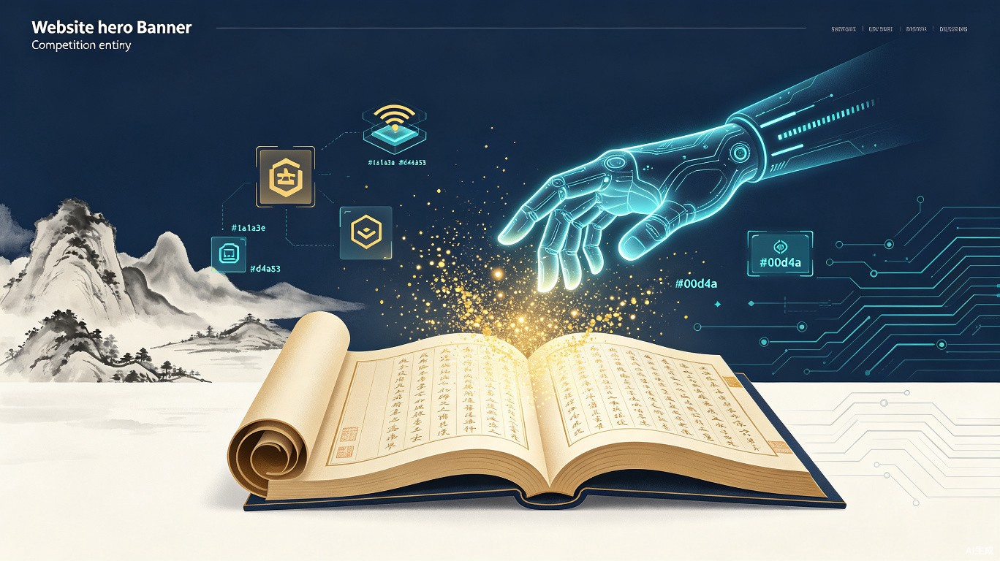

1 创意名称 + 创意介绍
创意名称
墨韵 MoYun —— 古籍活化 AI 助手
想解决什么问题
中华文明留下了超过 5000 万册古籍文献，但这些珍贵文化遗产正面临"天书之困"——普通人面对繁体字、文言文几乎无法阅读，专业学者人工整理一本古籍需要数月甚至数年，而现有的古籍数字化平台缺乏互动性和趣味性，年轻人根本不愿意看。古籍正在沉睡，文化传承面临断层的危险。
为什么会想到做这个
灵感来自一次博物馆参观：面对展柜里精美的古籍碑刻，身边的小朋友问家长"这上面写的是什么呀"，家长也只能尴尬地摇摇头。那一刻我突然意识到——我们拥有数千年的文化宝藏，却被语言壁垒锁在了"玻璃柜"里。如果能用 AI 拍照翻译，让古文"秒懂"，这不正是技术最应该做的事情吗？
大概是什么产品
古籍图片
生成白话文
+ 知识卡片
2 目标用户及痛点
面向哪些用户
学生群体
初高中生、大学生，需要学习文言文、古诗文鉴赏
教师与教育工作者
语文教师、国学讲师，需要备课素材和教学工具
古籍研究者
高校学者、图书馆员，需要批量整理和翻译文献
文化爱好者
博物馆游客、国风爱好者、社交媒体内容创作者
在什么场景下使用
-
📖
课堂学习
学生遇到不懂的文言文课文，拍照即可获得翻译和趣味解读，替代翻字典的低效方式
-
🏛️
博物馆 / 古迹游览
游客拍摄碑刻、展品上的古文，即时获取解读，让走马观花变成深度体验
-
💼
学术研究与整理
研究者批量上传古籍影像，快速获得初步翻译和断句，大幅提升整理效率
-
📱
社交内容创作
创作者生成精美知识卡片分享到微信/小红书/微博，用"好看好玩"传播传统文化
当前痛点（没有墨韵会怎样）
学生：翻厚厚的《古汉语字典》查一个字要好几分钟，翻译一整段文要半小时以上，做题效率极低。
教师：备课找文言文翻译素材靠手动输入和百度，缺乏系统化、趣味化的教学辅助工具。
研究者：古籍整理全靠人工逐字标注，一本中等篇幅的古籍整理周期长达数月甚至数年。
文化爱好者：博物馆里的碑刻古文看不懂，现有的古籍 App 又是枯燥的"扫描+检索"模式，提不起兴趣。
3 价值与意义
社会价值：守护文化根脉
古籍是中华文明的 DNA，但 90% 以上的古籍从未被翻译整理过，普通大众完全无法接触。墨韵通过 AI 降低阅读门槛，让古籍从"学者的专利"变成"人人可读的宝贝"。当古文不再是天书，文化传承就有了最坚实的土壤。
效率提升：10 秒替代数小时
传统方式：人工翻译一段 200 字的文言文，查字典 + 断句 + 翻译，约需 1-2 小时。墨韵方式：拍照 → AI 处理 → 出结果，仅需 约 10 秒。效率提升数百倍。
技术实现思路（简要）
前端使用 TRAE Work 的 Auto 模式快速搭建，AI 层通过 PaddleOCR 进行古籍文字识别（支持竖排/繁体/异体字），再由大语言模型完成翻译和趣味解读，结合 RAG 引入专业古籍语料确保翻译准确性。后端采用 Node.js + Supabase，整体 Serverless 部署在 Vercel，零运维成本。
去噪/纠偏
古籍文字识别
翻译 + 趣味解读
+ 社交分享
4 创意产物
本 HTML 文件即为使用 TRAE Work（Auto 模式） 生成的创意产物，完整展示了墨韵项目的创意方案，包括产品界面原型、功能演示流程、技术架构与价值分析。可直接上传到 TRAE 社区作为参赛附件。
本作品为 TRAE AI 创造力大赛 参赛作品
赛道：社会服务 + 社会公益（古籍活化附加赛题）
使用 TRAE Work 构建 · AI 让创造力触手可及